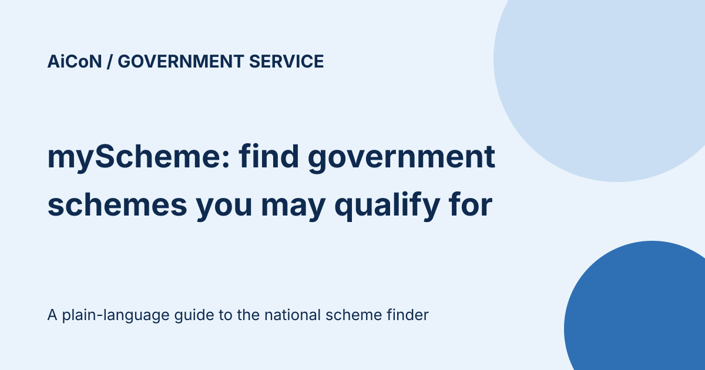

myScheme: find government schemes you may be eligible for
India has hundreds of central and state schemes, and most people only hear about the few that reach them by word of mouth. myScheme (myscheme.gov.in) is the government's national search platform for schemes. You enter a few basic details, it lists schemes that match, and each scheme page tells you the benefits, eligibility, documents and where to apply.

What is myScheme?
myScheme describes itself as a national platform for one-stop search and discovery of government schemes. It is developed, managed and operated by the National e-Governance Division (NeGD), with support from the Ministry of Electronics and IT (MeitY) and the Department of Administrative Reforms and Public Grievances (DARPG), in partnership with other central and state ministries and departments.
It covers schemes from the Central Government, State Governments and Union Territories on a single platform, so you do not need to visit many departmental websites to find them.
How does it work?
| Step 1 | Enter basic details such as demographic information, income and social category. |
|---|---|
| Step 2 | The search engine shows relevant schemes based on what you entered. |
| Step 3 | Open a scheme from the list to read its dedicated page, then use its link to the official application site. |
You can also browse by category, by state or Union Territory, or by central ministry, as shown on the homepage.
What does each scheme page show?
- Eligibility criteria
- Benefits offered
- Application procedure
- Documents required
- Frequently asked questions about that scheme
A careful way to use it
- Open myscheme.gov.in yourself and use Find Schemes For You.
- Enter details that are accurate for the person applying. Wrong details give a wrong list.
- Open each scheme you like and read eligibility and documents before doing anything else.
- Check the dates, if any, on the official application site the scheme page links to.
- Apply only on the official application link. Do not pay anyone to "register" you for a scheme.
We did not enter personal details or apply for any scheme. The eligibility results, sign-in features and individual scheme pages were not tested for this guide.
Frequently asked questions
Who runs myScheme?
The National e-Governance Division, with support from MeitY and DARPG, per the About page.
Does it include state schemes?
Yes. The site says it brings together schemes from the Central Government, State Governments and Union Territories.
Where can I get help?
The site lists support-myscheme[at]digitalindia[dot]gov[dot]in and the phone number (011) 24303714, available 9:00 AM to 5:30 PM.
Can I apply on myScheme itself?
The platform says users can "navigate to the respective application URL to apply". Treat each scheme's own page as the place to confirm how to apply.
Sources: myScheme homepage and FAQs · myScheme About Us. Checked 7 October 2026.